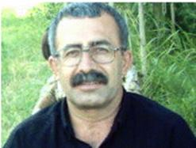

پذيرش > تریبون > مقالات > محمود صالحی : تنها ضربه ای که جنبش های موجود را ضعیف می کند پراکندگی آنان و تحمل (...)


 محمود صالحی : تنها ضربه ای که جنبش های موجود را ضعیف می کند پراکندگی آنان و تحمل نکردن یک دیگر است محمود صالحی : تنها ضربه ای که جنبش های موجود را ضعیف می کند پراکندگی آنان و تحمل نکردن یک دیگر است
13 مهر 1389 - زهره اسدپور - نسخه قابل چاپ
تغییر برای برابری / مجموعه ی کمپین از نگاهی دیگر : محمود صالحی از فعالین به نام و شناخته شده ی کارگری است.او همچنین از بنيانگذاران انجمن صنفی کارگران خباز شهر سقز و از اعضای هيات موسس سنديکاهای کارگری در ايران است .او پیش از این و به اتهام برگزاری مراسم برای بزرگداشت اول ماه می، بازداشت و مدت بیش از یک سال را در زندان سنندج گذراند. (پیشتر از آن نیز چندین بار و با اتهامات مختلف دستگیر و زندانی شده بود ) پس از پشت سر گذاشتن چهارسال از فعالیت کمپین یک میلیون امضا، نظرات او را درباره ی این حرکت جویا شده ایم :
به نظر شما نیازها و مطالبات یک زن کارگر با دیگر زنان در چه حوزه هایی متفاوت است ؟
زنان کارگر، يک بار در کنار مردان يعنی هم طبقه ای های خود استثمار می شوند و بر آنان ستم روا می شود و يک بار به خاطر اين که زن هستند، مورد ستم قرار می گيرند. کارگر زن به زنی می گویند که مستقیم در کارگاه یا کارخانه مشغول به کار است. تفاوت این کارگر زن با دیگر زنان خانه دار این است که او استثمار بیشتری می شود. زن کارگر بعد از اتمام کار روزانه، وقتی جهت اسراحت به خانه بازمی گردد، آن وقت تازه کارش شروع می شود و باید به آشپزی، نظافت، مهمان داری، بچه داری، شوهرداری و .... بپردازد.
پس زن کارگر از هر نظر چند برابر بیشتر از زنی که در خانه کار می کند، استثمار می شود. بنابراین زن کارگر می داند که توسط شوهر، پدر و یا برادر هم استثمار می شود و برای از میان برداشتن آن مبارزه می کند. یعنی خواست و مطالبات زنان کارگر با زنان خانه دار از نظر قوانین موجود یکی است. اما زن کارگر چون از نظر اقتصادی مشکلات کم تری دارد، برای رسیدن به خواست و مطالبات خود فعال تر است.
زنان کارگر چه نیازهایی غیر از بهبود شرایط اقتصادی خود دارند؟ مثلن آیا حقوق برابر در ازدواج یا طلاق جزء نیازهای آنان هست؟ و آیا در این موارد با دیگر زنان مشترک نیستند؟ اگر پاسخ شما در این مورد مثبت است، آیا کمپین بر تحقق همین خواسته ها ی مشترک بنا نشده است؟
بله این طبیعی است که حقوق برابر در ازدواج و طلاق جز نیازهای آنان است و مشترک می باشد. اما این خواست و مطالبات را باید از چه طریق به دست آوردند؟ تنها با مطرح کردن مشکلات زنان می شود آنان را از یوغ بردگی نجات داد؟ به نظر من بقال سر کوچه هم می داند که در جامعه ما بر زنان ستم روا می رود و اکثریت جامعه به این ستم واقف هستند، اما تنها با بیان این مشکلات می توان زنان را آزاد کرد؟ جنبش شما می خواهد بیدادگری های طبقاتی را از طریق تغییر قانون ( که هیچ وقت نمی توانید.. .. ) و انواع مختلف وصله کاری ها از بین ببرد، بی انکه به سیستم سرمایه داری و نظام نابرابر کمترین زیانی وارد آید.
من به شما عزیزانی که در کمپین یک میلیون امضاء جمع شدید پیشنهاد می کنم که یک بار دیگر بیانیه خود را مطالعه کنید و روی بند بند آن مکث کنید و ببینید که در کجای آن بیانیه زنان را برای مبارزه دعوت کرده اید.کمپین یک میلیون امضاء تنها دردهای زنان را برابر قوانین حاکم در ایران مطرح کرده است. ولی در هیچ کجای نوشته های شما راه مبارزه و رسیدن به خواست و مطالبات زنان را بیان نکرده اید. شما زنان را دعوت کرده اید تا از چاله ای درآورید و آنان را به چاه بیندازید و آن هم توسط یک عده که امروز در قدرت نیستند
اگر بنا بود شما برای زنان حرکتی همه گیر را پایه ریزی کنید، به لحاظ استراتژی، مطالبات و مسیر حرکت ، چه چیزی را پیشنهاد می دادید؟
اين واقعيت است که تنها با برقراری يک جامعه برابر است که کار مزدی پرولتاريا از بين می رود. رهائی کارگران زن از زير ستم مضاعف در همه اشکال آن، امروز در جامعه به صورت يک نياز مبرم و واقعی مطرح است. اما کارگران زن بدون اتحاد با کارگران مرد و مبارزه سترگ و قاطع بر عليه سرمايه داران و کل سيستم سرمايه داری حاکم، قادر به رهائی خود نيستند. واقعيت اين است که راه رهائی همه کارگران اعم از زن و مرد- از استثمار وحشيانه و ظلم بيشمار سيستم سرمايه داری، در خلع يد از سرمايه داران يعنی با لغو مالکيت خصوصی آنان بر وسايل توليد و انتقال وسايل توليد به مالکيت اجتماعی نهفته است. باید به زنان گفت که رهایی شما تنها با لغو مالکیت خصوصی امکان پذیر است و زنان را برای این امر مهم سازماندهی کرد. در این میدان مبازره طبیعی است که ما خواستار مطالبات روز هم باشیم و برای به دست آوردن آن از هیچ کوششی کوتاهی نکنیم .این مطالبات هم در هر منطقه با منطقه دیگر متفاوت است و این رهبران و فعالان هستند که این تفاوت را تشخیص می دهند و برای به دست آوردن آن مبارزه می کنند.
آیا مواردی مانند برابری حقوقی را نمی توان بخشی از مطالبات روز دانست که مبارزه برای تحقق آن در کنار مبارزه برای تغییراتی بنیانی تر ضرورت دارد؟
چرا، در چنین شرایطی برای حصول هدف ها ی بلافصل و برای اعمال منافع آنی باید مبارزه کرد. ولی این استراتژی نیست، بلکه مطالبات روز است که باید تمام فعالان به آن توجه داشته باشند. علاوه بر این، اگر می خواهید به مطالبات روز هم برسید باید با طبقه کارگر و دوش به دوش آن مبارزه کنید. این طبقه کارگر است که برای تغیرات بنیانی و لغو هر گونه استثمار انسان به دست انسان مبارزه می کند وجنبش طبقاتی آینده را نمایندگی و حافظ آن می باشد. ولی کمپین شما به تغیرات بنیانی اعتقاد ندارد. وقتی زنان را به دنبال کسانیکه در بیانیه خود به آن اشاره کرده اید می فرستید که امروز در قدرت نیستند و ما می دانیم که آنان خود مدت ها در قدرت بودند و برای بهبود وضعیت زنان هیچ کاری انجام ندادند.
اگر با حرکت مطالبه محور موافق نیستید، برای کسانی که قصد دارند، به شکل مشخص فرودستی زنان را در جامعه به چالش بکشند چه پیشنهادی داشتید ؟
من در سئوال هایم به آن پاسخ دادم و لازم نمی بینم که یک بار دیگر به آن بپردازم. قبل از هر چیز باید زنان را برای رهایی از هرگونه ستم طبقاتی رهبری و سازماندهی کرد و در این میدان اگر هم به مطالبات روز هم دست رسی پیدا کنیم، نباید آن را نادیده بگیرم و بگوییم چون ما مبارزه ریشه ای و طبقاتی می کنیم، دیگر کاری به آن نداریم. مبارزه برای دستیابی به مطالبات روز زنان، تعطیل نشدنی است و باید همواره به آن پرداخت تا به اهداف رسید. مثلا" در ماده 38 قانون کار برابری زن و مرد به رسمیت شناخته شده است. من از شما و همفکران شما سئوال دارم. آیا در تمام دنیای سرمایه داری ( حال تنها ایران نه ) این برابری به وجود آمده یا خیر؟ من مطمئن هستم که جواب شما به آن سئوال منفی است.در نظام سرمایه داری دنیا زن به عنوان یک کالا خرید و فروش می شود.
اگر حرکت¬های کارگری موجود با حرکتی نظیر کمپین یک میلیون امضا مقایسه شوند، چه تفاوت ها و اشتراکاتی دارند؟
بخش زیادی از حرکت های کارگری موجود بر علیه مناسبات سرمایه داری است و این حرکت ها، برای رفرم و یا اصلاحات نیست، به این دلیل نمی توان با حرکت کمپین یک میلیون امضا آن را مقایسه کرد. چون حرکت کمپین یک میلیون امضا مشخص نکرده که چه چیزی می خواهد. مثل آن است که یک کلکسیون داشته باشید و هر چیزی که دوست دارید در آن جا بدهید. من وقتی می بینم که چه کسانی با کمپین یک میلیون امضا هستند، متوجه می شوم که آنها فقط می خواهند از طریق زنان محروم جامعه به نوایی برسند و.... من معتقد هستم که در جامعه دو طبقه اصلی وجود دارد، یعنی طبقه کارگر و طبقه سرمایه دار، شما باید هویت خود را مشخص کنید که در صفوف کدام طبقه قرار دارید و برای چه چیزی مبارزه می کنید باید آن را به روشنی و صراحت بیان کنید.
از نظر شما شیوه ی جمع آوری امضا برای کمپین، جزء نقاط قوت آن است یا ضعف آن؟
به نظر من جمع آوری امضاء در این شرایط نشانه ضعف آن جنبش و یا آن حرکتی است که هر نیروی پیش روی خود دارد.( جمع آوری امضاء یک حرکت سمبلیک است) در غیر اینصورت، اگر این حرکت عینی و مادی باشد، می توان آن را سازماندهی کرد و رسما" بدون هیچ ترس و واهمه ای خواستار مطالبات شد، مگر زنان جزء اینکه می خواهند به عنوان انسان برای آنان حق و حقوقی در نظر بگیرند چه می خواهند. اگر کمپین یک میلیون امضاء خود را به عنوان نماینده زنان در جامعه می بیند؟ چرا در اعتراضات و مراسم های که مربوط به جنبش ها اجتماعی از جمله روز کارگر و یا هشت مارس است شرکت نمی کند؟ ( شاید من از آن اطلاع ندارم )
آیا شما، به عنوان یک کنشگر، قائل به اولویت بندی حل مسائل اجتماعی هستید؟ (مثلا حل مسائل اقتصادی اجتماعی قبل از مسئله-ی زنان)
این طبیعی است که ما باید هم به مسائل روز و هم مسایل اقتصادی توجه داشته باشیم. تشکل های هستند که به نام زنان مبارزه می کنند یکی از شعار های اصلی شان حق طلاق است من با این نوع مطرح کردن مخالف هستم. اینجاست که باید اول مسائل اقتصادی زنان را در نظر بگیریم و بعد خواستار حق طلاق برای آنان باشیم. زنان بدون داشتن شغل و یا سرمایه ای، اگر هم حق طلاق داشته باشند چطور می توانند خود را تامین کنند در حالی که هیچ گونه امکاناتی ندارند و یک زن بیوه با ده ها مشکلات روبرو است و نمی تواند حتی شکم خود را سیر کند.پس باید برای حل مسائل اقتصادی مبارزه کرد و باید دولت را موظف کنیم که به زنان بیوه حقوق پرداخت کنند تا از نظر مالی مشکل نداشته باشد.
بزرگترین انتقادی که به کمپین یک میلیون امضا وارد می دانید چیست؟ ( در رابطه با جنبش های کارگری)
کمپین یک میلیون امضاء خود محور است و تنها خود را می بیند.
ممکن است مثالی درباره ی خودمحوری کمپین بزنید ؟
این پرسش را باید از شما کرد که یکی از بانیان کمپین یک میلیون امضا هستید و از شما سئوال شود که در کدام اعتراض های کارگری و یا اعتراضات زنان شرکت کردید؟ شاید چند نفر از اعضای شما در اعتراض های شرکت کرده باشند، اما نه به نام کمپین بلکه انفرادی و بدون هویت تشکیلاتی
بزرگترین ضربه و بزرگترین بهره¬ی جنبش¬های اجتماعی از اتفاقات خرداد 88 به این سو را در چه چیزی می¬دانید؟
البته در یک سال گذشته جنبشی بنام جنبش سبز بعد از انتخابات ظهور کرد و این جنبش با توجه به اینکه تازه به دوران رسیده بود، اعتراضاتی هم سازماندهی کرد. ولی بعد از مدتی خیلی آرام و بدون هیچ اثری از بین رفت ( هر چند هزینه هایی هم متحمل شد ) و دیگر در هیچ جایی دیده نشده اند . مگر اینکه هرچند ماه یک بار نامه ای برای مسئولان ارسال کنند. در آن زمان هم جنبش هایی که هویت آنان برای افراد جامعه مشخص نبود خود را با جنبش سیز تداعی می کردندو امروز هم به این عمل خود ادامه می دهند.
جنبش هایی هم که سالهاست ( جنبش کارگری ، جنبش زنان و جنبش دانشجویی) مبارزه می کنند وقبل از سال 88 هم ده ها بار مورد حمله قرار گفتند، اما با توجه به این همه سرکوب به مبارزه خود ادامه داده و می دهند.برای نمونه می توان به اول ماه مه 1388 اشاره کرد که چطور نیروهای انتظامی به پارک لاله تهران حمله کردند و 150 نفر از کسانی که می خواستند در مراسم اول ماه مه شرکت کنند، آنان را دستگیر و زندانی کردند. جنبش های موجود برای اینکه خود را به سیستم تحمیل کنند باید متحد و با حفظ اهداف و استراتژی خود با هم دیگر متحد شوند تا به وزنه تبدیل بشند. تنهای ضربه ای که جنبش های موجود را ضعیف می کند پراکندگی آنان و تحمل نکردن یک دیگر است.
به نظر شما و با توجه به شرایط فعلی جامعه¬ی ایران، قدرتمند¬تر شدن حرکت¬های مدنی در گرو چه فاکتورهایی است؟
به نظر من قبل از هر چیز باید با سکتاریسم درون تشکیلاتی مبارزه کرد اول باید گرایشات موجود را قبول کرد و برای افراد شان احترام قائل شد و بعد دنبال اتحاد رفت. بدون اتحاد هیچ نوع مبارزه ای در این شرایط به پیروزی نخواهد رسید. ما در جامعه ای زندگی می کنیم که هر گونه اعتراض به وضع موجود جرم محسوب می شود و کسی که اعتراض میکند با شدیدترین وجه محاکمه و روانه زندان می شود. سیستم حاکم حتی نیروهای خودش را هم تحمل نمی کند. پس پیشروی جنبش های موجود در گروه اتحاد با هم دیگر است.
مبارزه با سکتاریسم به معنی اتحاد جنبش های موجود است و باید کسانی آن را شروع کنند تا بتوانیم با حفظ گرایشات موجود و احترام متقابل به همدیگر به این امر مهم رسید. ما در کشوری زندگی می کنیم که ده ها نوع گرایش برای مبارزه وجود دارد. این گرایشات در بعضی مواقع حتی حاضر به بیان نظرات خود نیستند و همیشه روی آن تاکید می کنند که مبارزه آنان صنفی و مدنی است. ولی این توهم به نظام سرمایه داری است، نظام سرمایه داری وقتی خطر را احساس کند کاری به آن ندارد که چه جنبشی مدنی و صنفی است و یا چه جنبشی در خانه براندازی قرار دارد، بدون استثناء همه را سرکوب می کند!! ما در چند سال گذشته شاهد آن بودیم که تشکل های موجود با هم نشست های داشتند و با هم به توافقاتی هم رسیدند.( برای نمونه می توان به قطعنامه های اول ماه مه اشاره کرد) از سوی دیگر ما نباید انتظار داشته با شیم که همه گرایشات موجود با هم ادغام شوند ما باید روی آن کار کنیم که این گرایشات با هم به توافقاتی در موارد خاص برسند.اما این نشست ها کافی نیست، چون درد ما همگی یکی است و نباید از آن فرار کنیم.
ارسال به
بالاترین
،
توییتر
،
فریندفید
،
فیسبوک
در همين بخش :
 دهمین دورۀ مراسم تندیس صدیقه دولت آبادی ۱۳۹۲ دهمین دورۀ مراسم تندیس صدیقه دولت آبادی ۱۳۹۲
کارت پستالهایی به بهانهی هشت مارس و به یاد همهی مبارزین راه برابری
بیانیه بیش از 350 تن از مدافعان حقوق زنان به مناسبت روز جهانی زن؛ زنان هر روز فرودستتر میشوند
لباسی که برای تن ما دوخته اند! /اعظم بهرامی
چالشها و چشمانداز فعالیت مدنی زنان
ديگر بخش ها :
طرح یک میلیون امضا
|
مقالات
|
سایت نوشته ها
|
اخبار
|
گزارش كمپين
|
گفت و گو
|
علیه سکوت
|
كوچه به كوچه
|
نامه های شما
|
گزارش ویژه
|
گفتگو با اعضا
|
ویژه سالگرد کمپین
|
تصویر برابری
|
دل آرام علی
|
تریبون
|
مقالات
|
تاریخ شفاهی
|
خارج از چارچوب
|
کتابخانه
|
درباره کمپین
|
کمپین در شهرها
|
کمپین در بند
|
صدای تغییر
|
ویژه 22 خرداد
|
لایحه حمایت از خانواده
|
گالری
|
عشا مومنی
|
امیر یعقوبعلی
|
خدیجه مقدم
|
راحله عسگری زاده و نسیم خسروی
|
پروین اردلان،جلوه جواهری، مریم حسین خواه، ناهید کشاورز
|
زینب پیغمبرزاده
|
سعیده امین، سارا ایمانیان، محبوبه حسین زاده، ناهید کشاورز و همایون نامی
|
احترام شادفر
|
نسیم سرابندی زاده،فاطمه دهدشتی
|
وبلاگ مهمان
|
پرونده خرم آباد
|
دستگیری ها
|
مریم مالک
|
پرستو اللهیاری
|
مهرنوش اعتمادی
|
سمیه رشیدی
|
Other Languages
|
همراهان
|
«فراخوان کمپین ده روز با بهاره هدایت»
| English
|